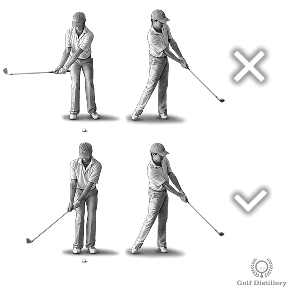

Putter
Setup Fundamentals

Standard Position: Place the ball slightly forward of center in your stance, typically 1-2 ball widths inside your lead foot (for right-handed golfers).
Why it matters: This position allows you to strike the ball slightly on the upswing, promoting a smooth roll rather than backspin or skidding.
Check your position: Your eyes should be directly over the ball or just slightly inside the target line.
Eyes Over Ball: Position your eyes directly over the ball or slightly inside the target line. This provides the best perspective for reading your line.
Test your eye position: Hold a ball at the bridge of your nose in your putting setup. When you drop it, it should hit the ball on the ground (or land just inside it).
Benefits: Proper eye position improves your ability to aim accurately and see the true line to the hole.
Narrow Stance: Your feet should be approximately shoulder-width apart or slightly narrower. This is narrower than your full swing stance.
Why narrow works: A narrow stance minimizes lower body movement and promotes a pendulum-like stroke driven by the shoulders.
Stability vs. Freedom: While narrow, your stance should still feel stable and balanced throughout the stroke.
Athletic Position: Bend from your hips (not your waist) to create a comfortable athletic posture. Your back should be relatively straight.
Arm Hang: Let your arms hang naturally from your shoulders. This creates a natural pendulum that swings from the shoulders.
Comfort is Key: You should feel balanced and comfortable, able to hold this position without strain.
Conventional (Reverse Overlap): Most common grip. Right hand below left, with left index finger overlapping right fingers.
Cross-Handed (Left Below Right): Left hand below right (for right-handed golfers). Reduces wrist breakdown and promotes shoulder-driven stroke.
Claw Grip: Right hand positioned like a claw on the side of the grip. Minimizes right-hand dominance.
Finding Your Grip: Experiment to find what gives you the most consistent feel and control. The best grip is the one that works for you.
Light and Consistent: Grip the putter like you're holding a small bird - firm enough to maintain control, but light enough not to harm it.
Sam Snead's Wisdom: "Hold the club like you're holding a tube of toothpaste - you don't want any to squeeze out."
Benefits of Light Grip: Maximizes feel and touch, reduces muscle tension in forearms, promotes smooth flowing stroke, and allows natural wrist hinge.
Maintain Constant Pressure: Keep grip pressure consistent throughout the stroke. Tightening at impact reduces feel and control.
Balanced Distribution: Distribute your weight evenly between both feet, or slightly favor your front foot (55/45). This promotes a stable, repeatable stroke.
Avoid: Too much weight on your back foot can cause an ascending blow that pops the ball. Maintain even balance for consistent contact.
Feel stable: Your weight distribution should allow you to feel balanced and centered throughout the stroke.
Stroke Mechanics

Straight Back and Through: The putter travels straight back and straight through along the target line. This is simpler than an arc and easier to maintain a square clubface.
Practice Drill: Place two alignment sticks or clubs parallel to your target line, creating a channel. Stroke putts between them without touching either stick.
Slight Arc is Acceptable: Some golfers naturally have a slight arc due to shoulder rotation. This is fine as long as it's consistent. Avoid excessive inside-out or outside-in paths.
Square at Impact: The putter face must be square to your target line at impact. This is the single most important factor in starting the ball on line.
Research Shows: Face angle accounts for approximately 90% of a putt's starting direction. Path contributes only about 10%.
Maintaining Square Face: Use shoulder rotation (not hands/wrists), keep grip pressure constant, think pendulum motion, and avoid manipulating the face.
Smooth and Consistent: Maintain the same tempo on all putts, regardless of length. Tempo should feel rhythmic and natural.
The 2:1 Ratio: Many great putters use a 2:1 backswing to forward swing ratio. If your backswing takes 2 counts, your through-swing takes 1 count.
Find Your Rhythm: Practice with a metronome or count in your head. The specific tempo matters less than keeping it consistent for better contact and distance control.

Match Distance with Length: Control distance by varying the length of your stroke, not by hitting harder or softer.
Symmetrical Motion: Your follow-through should be approximately equal to or slightly longer than your backswing.
Short vs. Long Putts: Short putts need 15-20 cm back and through. Long putts might be 12-18+ inches depending on distance.
Avoid Common Mistake: Don't take a long backswing and then decelerate. Keep it short and accelerate through.
Never Decelerate: The putter should be accelerating (or at minimum, maintaining speed) through impact. Never slow down into the ball.
Why Acceleration Matters: Creates consistent contact point, solid feel, predictable roll, and prevents chunks and thin hits.
Solution: Shorten your backswing and commit to accelerating through. Think "slow back, smooth through."
Top 5 Swing Thoughts
When to use: During setup, before every putt. This is your foundation for proper alignment and seeing the line correctly.
Why it works: Proper eye position gives you the best perspective for reading the line and ensures your setup promotes a repeatable stroke. When eyes are over the ball, your shoulders naturally align square to the target.
Mental cue: "Eyes down, ball in sight" - check this during your setup routine.
When to use: At setup and during stroke execution. Face angle determines 90% of starting direction.
Why it works: Simplifying your focus to just the putter face removes other variables. If the face is square at impact, the ball starts on line.
Mental cue: "Square face, straight start" - visualize the face pointing exactly at your target through impact.
When to use: During your stroke. Perfect for maintaining tempo and eliminating hand/wrist manipulation.
Why it works: Thinking "pendulum" promotes shoulder-driven stroke with minimal wrist action. Like a grandfather clock - smooth, rhythmic, consistent.
Mental cue: "Rock the shoulders, quiet the hands" - let your shoulders create the motion while hands stay passive.
When to use: For aim and commitment. Pick a precise target rather than aiming at "the hole."
Why it works: Aim small, miss small. Picking the exact center (or a specific blade of grass on breaking putts) sharpens your focus and commitment.
Mental cue: "Pick a spot, trust it" - once you've chosen your line, commit fully without second-guessing.
When to use: During the stroke itself, especially under pressure. Prevents rushed backswing and deceleration.
Why it works: A deliberate backswing naturally leads to smooth acceleration through impact. This eliminates the #1 putting fault: deceleration.
Mental cue: Count "one" on backswing, "two" on through-swing - creates perfect 2:1 tempo ratio.
Common Fixes
Cause
Putts consistently start left of your intended line (for right-handed golfers). Common causes include closed face at impact, outside-in path, poor shoulder alignment, or head movement.
Fix
Check Face Alignment: Practice with alignment sticks or use gate drill to ensure square face.
Verify Path: Place clubs on either side of ball to create channel - stroke should be straight back and through.
Keep Head Still: Listen for ball to drop rather than watching it. Head movement causes pulls.
Cause
Putts consistently start right of your intended line. Common causes include open face at impact, inside-out path, shoulders aimed right, or weight too far forward.
Fix
Check Setup: Ensure you're not standing too close to ball (causes open face).
Verify Shoulder Alignment: Shoulders should be parallel to target line, not open.
Practice Straight Path: Use gate drill or alignment sticks to train straight back and through motion.
Cause
Putter slowing down into impact instead of accelerating through. Often caused by backswing too long, fear of hitting too hard, or poor tempo. Leads to poor distance control and inconsistent contact.
Fix
Shorten Your Backswing: Take putter back only as far as needed.
Think "Slow Back, Smooth Through": Deliberate backswing, accelerating forward swing.
Practice Drill: Hit putts with follow-through equal to or longer than backswing.
Commitment: Once you start forward, commit to accelerating through.
Cause
Inconsistent distance results from varying tempo, deceleration, or trying to control distance with force instead of stroke length.
Fix
Control with Length, Not Force: Vary stroke length while maintaining consistent tempo.
Practice System: Calibrate your stroke lengths to specific distances (e.g., 15 cm = 3m, 30 cm = 6m).
Clockwise Drill: Place tees at 1, 2, and 3 putter lengths around a hole. Putt from each position to develop feel.
Cause
Short putt misses often result from poor face control, deceleration, peeking (head movement), or tension/anxiety.
Fix
Routine is Critical: Develop and trust a consistent pre-putt routine for every short putt.
Face Angle First: Ensure putter face is square at address. 90% of direction comes from face angle.
Keep Head Still: Listen for the ball to drop instead of watching. Head movement ruins face control.
Accelerate: Short backswing with confident acceleration. No deceleration allowed.
Practice Pressure: Practice short putts with consequences (make 25 cm a row or start over).
Aim & Alignment

Face Angle Dominates Direction: Studies show putter face angle accounts for about 90% of where the ball starts.
Aim Small, Miss Small: Instead of aiming at "the hole," pick a specific spot on the hole or a blade of grass on your line.
Use Putter Alignment Aids: Set the putter behind the ball first, align the line to your target, then set your feet and body.
Square is Standard: For most putts, your feet, hips, and shoulders should be parallel to your target line (square).
Shoulders Matter Most: Your shoulder line dictates your stroke path. Make sure shoulders are square even if feet are slightly open or closed.
Check Your Alignment: Place a club across your toes - it should point parallel to your target line, not at the target.
See the Line: Before setting up, crouch behind the ball and visualize the line from ball to hole (accounting for break).
Pick a Spot: Find an intermediate target 15-30 cm in front of your ball on your intended line. Aim your putter over this spot.
Trust Your Line: Once you've picked your line and aimed, commit to it. Don't second-guess during your stroke.
Ball Alignment Line: Draw a line on your ball to help visualize your target line. Align this with your putter's alignment aid.
Procedure: 1) Mark your ball with a line, 2) Read the putt and pick your line, 3) Place ball with line pointing at target (accounting for break), 4) Align putter to ball's line, 5) Set body parallel to this line, 6) Execute stroke.
Confidence Builder: Good alignment breeds confidence. You can stroke freely when you trust your aim.
Distance Control
Feel is Learned: Distance control comes from experience and practice. You must develop a feel for how hard to hit putts of various lengths.
Clockwise 1-2-3 Putter Length Drill: Place tees at 1, 2, and 3 putter lengths around a hole. Putt from each position moving clockwise. Goal: Make all putts at each distance before moving on.
Why This Works: These are the most important putting distances (1-3m). Master them and your scores drop immediately.
Length, Not Force: Control distance by varying stroke length while maintaining consistent tempo. Don't hit harder or softer.
System Approach: Calibrate your stroke - for example: 15 cm back/through = 3m, 30 cm = 6m, 45 cm = 9m.
Important: These measurements vary significantly by green speed and individual stroke characteristics. Develop your own personal system through practice on different green speeds.
Maintain Tempo: Same rhythm on all putts. Only the length changes.
Feel the Speed: Every green is different. Take time to assess speed during your practice putts.
Practice Green Calibration: Hit several lag putts from 9-12m, notice how much the ball rolls out, calibrate your internal speedometer, and make mental adjustments for fast or slow greens.
During Round: First green tells you a lot - pay attention. Speed can change as day progresses (moisture, mowing). Back nine may play differently than front nine.
Uphill Putts: Add 10-20% more distance. Ball will break less than it appears. Firm stroke reduces break. Gravity works against you.
Downhill Putts: Reduce distance by 10-20%. Ball will break more than expected. Softer stroke allows more break. Gravity accelerates the ball.
Important Note: These percentages are general guidelines. Actual adjustments vary significantly based on green speed (8-12 stimp), slope severity, and turf conditions. Experience and practice on different greens will help you develop feel for your specific adjustments.
Green Reading
Macro View First: Before examining your specific putt, assess the overall slope of the green. Which way does it tilt? Where is the low point? Which way would water drain?
Architecture Clues: Greens usually slope away from mountains, often tilt toward water hazards, front-to-back tilt is common, and many tilt in the direction the hole faces.
Default Break: When in doubt, the overall green slope will dominate, especially on longer putts.
Behind the Ball View: Crouch low behind your ball looking toward the hole. This gives the best view of break.
Visualize the Curve: Imagine the ball rolling from your ball to the hole. See the entire path it will take and identify the apex (highest point of the break). Pick a point high on the slope to start the ball on - most amateurs under-read break, so aim higher than you think.
Speed Affects Break: Firm putts take less break. Soft putts take more break. Choose your speed strategy and read accordingly.
Pro Tip: Most amateurs under-read break. If you're unsure, play more break than you think you need.
What is Grain? The direction grass grows. More pronounced on Bermuda grass than on Bent grass.
Identifying Grain: Shiny appearance = with the grain (grass leaning away). Dull/dark = into the grain (grass leaning toward you). Grass usually grows toward water or setting sun.
Grain Effects: With grain = putts roll faster and straighter. Into grain = putts roll slower. Cross grain = ball breaks in direction of grain growth.
Die In (Softer Pace): Ball reaches hole with minimal speed. Takes more break. Larger effective hole size. Misses stay close. Requires excellent green reading.
Firm (Aggressive Pace): Ball reaches 30-45 cm past hole if missed. Takes less break. Ball holds line better. More forgiving of read errors. Longer comeback putts.
Best Strategy: Aim to finish 30-45 cm past the hole. Aggressive enough to hold line, but not so firm that misses are difficult.
Remember: "Never up, never in" - Putts that don't reach the hole have zero chance of going in.
What It Is: Holding your putter vertically like a plumb bob to read slope between ball and hole.
How to Use: Stand behind ball, hold putter by thumb and finger at end of grip, let it hang freely, close one eye (dominant), line up shaft with your ball, see where hole appears relative to shaft. If hole is right of shaft, putt breaks right (and vice versa).
Limitations: Only shows slope at midpoint, doesn't account for grain, requires practice, and many tour pros don't use it. This method has limitations and is disputed among teaching professionals.
Best Use: Use as confirmation of what you already see through conventional green reading, not as your primary read method.
Putting Routine
Putting routine emphasizes mental preparation over physical rehearsal. Most importantly: NO practice strokes according to Dave Stockton's proven approach.
Why it works: Putting benefits more from mental clarity and commitment to the line you've chosen than from physical rehearsal. Practice strokes can create doubt and focus attention on mechanics instead of target.
- Final read of slope and break
- Identify high point of break
- Confirm speed (fast/medium/slow)
- Pick starting line
- See ball rolling on chosen line
- Watch it curve and drop in hole
- Picture the entire roll - especially final 30cm into cup
- Look at hole while feeling stroke length
- OPTIONAL: 1-2 practice strokes while looking at hole (not at ball)
- Feel tempo and distance, not mechanics
- Dave Stockton method: ZERO practice strokes - just see and roll
- Walk in from side
- Aim putter face to starting line
- Build stance around putter
- One final look at hole (or target spot)
- Return eyes to ball
- Quiet eye: Steady gaze for 1-2 seconds
- From completely still to stroke start = 2-3 seconds
- Zero mechanical thoughts
- See the line, trust it, roll it
Dave Stockton emphasizes putting is about distance control, not mechanics. "Good putting comes from the mind, not from a series of stiff mechanical positions."
Key principle: Perfect line with wrong speed misses. Imperfect line with perfect speed often finds the cup. Focus on distance control first.